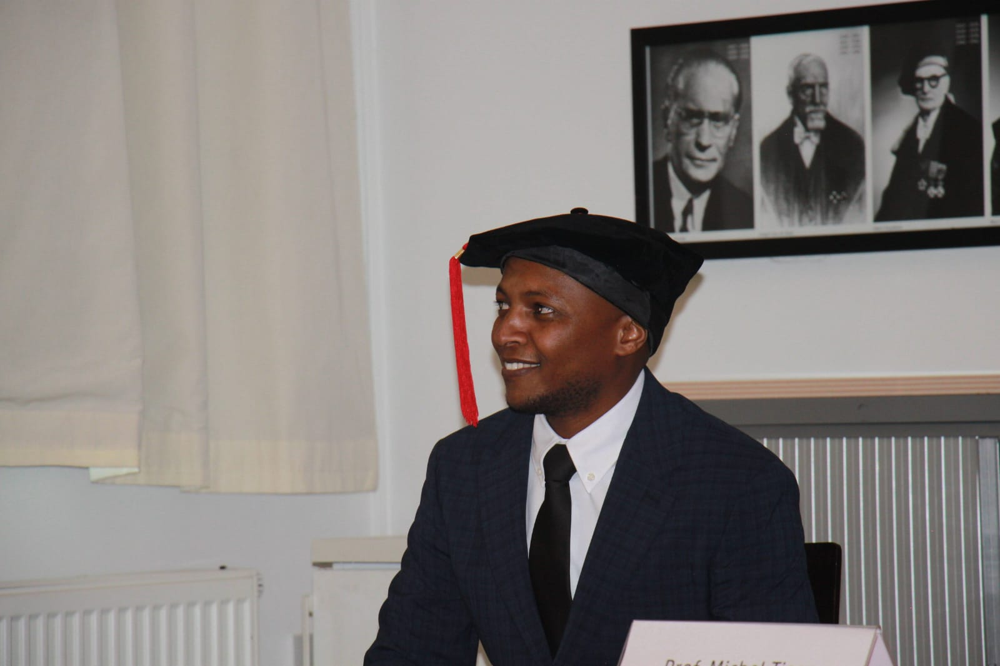
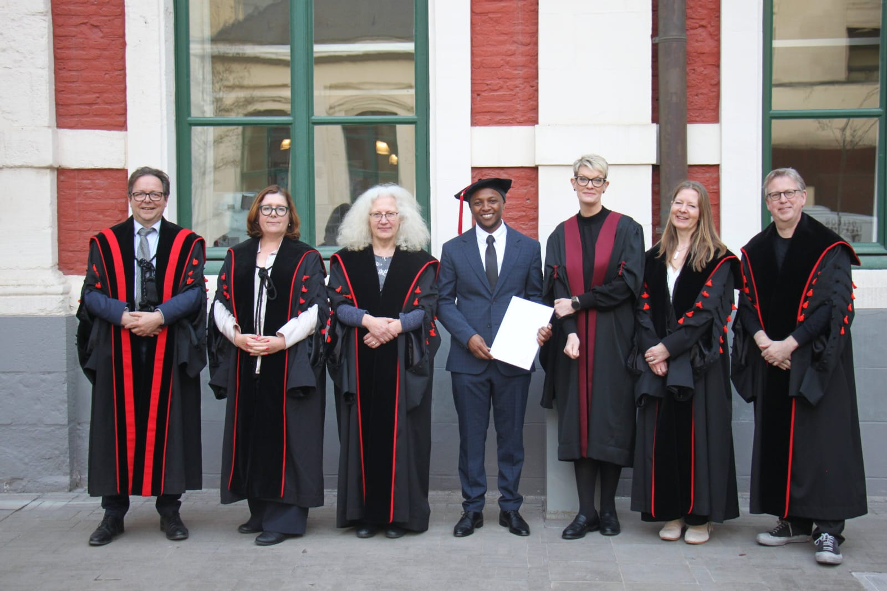
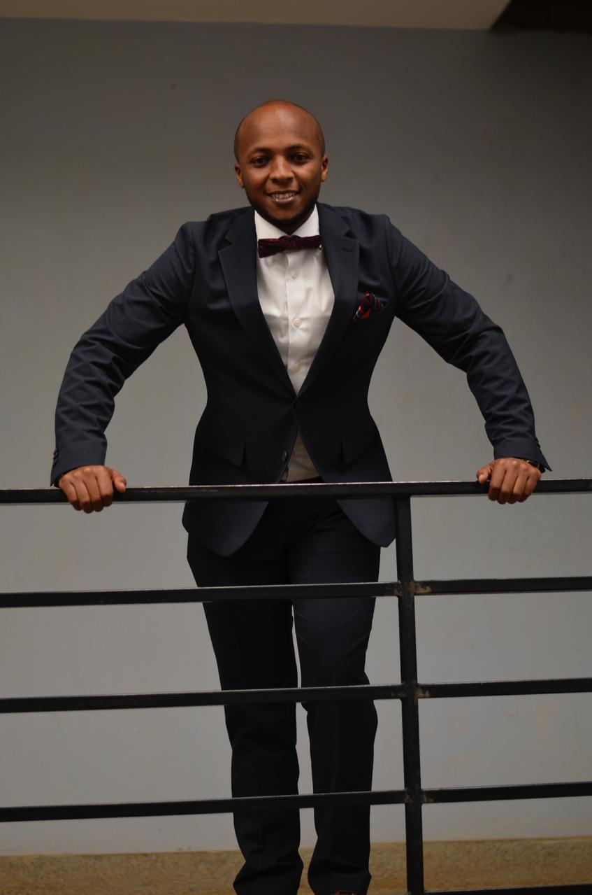

Ghent University
PhD Defense, Ghent University, 27 March 2025
PhD Defense, Ghent University, 27 March 2025



Dr. Edward Kahuthia Murimi

Kenyan Judiciary
Admission to the bar, 23 January 2013
Dr. Edward Kahuthia Murimi is a Kenyan human rights scholar, advocate, and policy expert specializing in international and African human rights law, democratic governance, and accountability.
He is currently a Postdoctoral Researcher at the Amsterdam Centre for International Law, University of Amsterdam, where he leads the examination of the African human rights system within a comparative project assessing the effectiveness of regional human rights regimes in contexts of democratic backsliding and systemic violations.
He holds a Doctor of Law degree from Ghent University, where his doctoral research critically analyzed the evidentiary regime of the African Court on Human and Peoples' Rights, combining doctrinal analysis with empirical fieldwork at the Court in Arusha, Tanzania.
Dr. Murimi brings over a decade of experience spanning academia, legal practice, civil society, and international development cooperation. He has served as a Technical Advisor with GIZ Kenya, a consultant to the African Union Commission, a Program Advisor at the Kenya Human Rights Commission and a practicing advocate in Nairobi, contributing to legal and institutional reforms that advance transparency, access to information, and the rule of law.
A published author and regular commentator on governance and human rights in Africa, his work bridges rigorous scholarship and practical engagement, reflecting a sustained commitment to strengthening democratic institutions and protecting fundamental rights.
Partner at Munyao Kayugira and Company Advocates law firm in Nairobi, Kenya
Leading the examination of the African human rights system within the 'Beyond Compliance' project. Researching legal-jurisprudential conditions for effectiveness in non-democratic regimes.
Investigated the evidentiary regime at the African Court (DISSECT Project). Conducted fieldwork in Arusha, interviewed judges, and lectured on International Human Rights Law.
Drafted judgments and rulings. Developed a code of evidentiary standards which was adopted in the Court's revised Practice Directions (March 2024).
Provided advisory services to the Office of the Ombudsman (CAJ). Supported county governments in mainstreaming good governance in agriculture.
Developed draft indicators/benchmarks for the African Governance Platform to measure implementation of the ACDEG. Served as lead speech writer for DPA leadership.
Specialized in Constitutional law, administrative law, employment law, and general commercial litigation.
Legal editor for Kenyan judiciary's first Bench book on electoral disputes resolution.
Peer reviewer for the African Human Rights Law Journal, providing critical feedback on submissions related to human rights law and practice in Africa.
Lead implementer of the Kenya Horticulture Project. Coordinated regional colloquiums on economic rights and managed legal aid clinics.
Trained farm managers and workers in horticulture/tea sectors on gender-based violence and labor rights. Compiled a casebook on industrial court jurisprudence.
Authored IEC materials on labor rights and conducted 'people's parliaments' for workers in the tea and sisal sectors.
Thesis title - Evidence at the African Court on Human and Peoples' Rights:
The Case for an Equitable Applicant-Centred Approach as a Pathway to Substantively Fairer Decisions
Human Rights and Democratisation in Africa.
| Selected Consultancies | |||
|---|---|---|---|
| Legal Consultant | Knoops' Advocaten (Amsterdam): For an Application filed at the African Court on Human and Peoples' Rights (Ongoing). | ||
| Rapporteur | African Union: 2018 African Union Annual African Anti-Corruption Dialogue on Corruption Measurement held from 2nd to 4th October 2018 in Arusha, Tanzania. | ||
| African Union: 7th Annual Humanitarian Symposium held from 18th to 20th November 2019 in Nairobi, Kenya. | |||
| African Union: Continental Youth Consultation: Youth and Forced Displacement in Africa held on 2nd-3rd December 2019 in Kampala, Uganda. | |||
| African Union: 8th High Level Dialogue on the theme - 'The Year of Refugees, Returnees and Internally Displaced Persons: Towards Durable Solutions to Forced Displacement in Africa' held on 4th -6th December 2019 in Kampala, Uganda. | |||
| Solidarity for African Women's Rights (SOAWR): Annual General Meeting held on 27th -29th January 2020 in Nairobi, Kenya. | |||
| International Development Law Organization (IDLO): National Gender and Equality Commission's Training on Cultural and Traditional Structures on Equality and Inclusion in Elections in May 2017 in Murang'a, Kenya. | |||
| Consultant | Hivos Foundation: Developed Position Paper on 'Workplace Sexual Harassment Policies in Kenya's Horticulture Sector' (2016). | ||
| Workshop Facilitator | Hivos Foundation - Women@Work Campaign: Conducted a workshop in Lusaka, Zambia for Civil Society actors drawn from East and Central Africa on International and Regional Frameworks on Corporate Accountability. | ||
| Kenya Human Rights Commission: Facilitated human rights education workshops in Meru and Laikipia Counties in Kenya. | |||
| Researcher | MUHURI: Delivered research paper on 'The Legal, Policy and Regulatory Framework in Kenya on Migrant Workers'. | ||
| Consultant | CRECO-Kenya: Rapid response research project on escalating insecurity in Bungoma County. | ||
University of Minnesota Press, 2025
Fluctuating standards of proof at the African Court: a case for principled flexibilityAfrican Human Rights Yearbook, 2023
Youth mobilities andd belonging in and out of a Kenyan urban 'hood'Rise Africa Discussion Series, 2021
Advancing the Right to Demonstrate in Kenya through Negotiated ManagementPalgrave Macmillan (Book Chapter), 2020
Corruption and the right to vote in free and fair elections in Africa: Is the will of the people in auction?African Human Rights Yearbook 375-399., 2018
Slum Upgrading in Kenya: A Double-Edged Sword for the Right to Adequate HousingLaw Society of Kenya Journal., 2017
VerfBlog, 2025
State-sanctioned human rights violation in Kenya: Countering repression with resistanceAfricLaw, 2025
Re-imagining Standards of Fairness in Open Source InvestigationsOpinio Juris, 2023
How long is (not) too long before filing an appllication at African Court? Evidentiary Challenges for incarcerated applicantsBlog Post, 2022
Applying an Evidentiary Lens to the Conflict in Ethiopia: Issues Arising from Investigative MandatesBlog Post, 2022
Arresting Corruption in Africa: Role of the YouthInstitute for Security Studies (Policy Brief), 2018
Beyond Rhetoric - Engaging Africa's Youth in Democratic GovernanceInstitute for Security Studies, 2017
The standard, 16 Aug 2025
How to investigate torture cases and deaths under police custodyThe standard, 28 June 2025
African Court did not say we postpone electionsDaily Nation, 28 July 2021
Fight Coronavirus but respect human rightsThe Standard, 31 May 2020
Care, lest BBi tampers with graft warDaily Nation, 28 Jan 2020
DCI and EACC have shared mmandate to investigate corruptionThe Standard, 27 March 2019
Judiciary at fault to issue pre-trial detention ordersThe Standard, 27 Feb 2019
It's duty of State to protect right of assembly and demonstrationDaily Nation, 18 May 2016
When the arms of government test boundaries'The Standard, 23 Aug 2015
How to tame labour unrest and make employees happyThe Standard, 5 Jan 2014
How about trade unions creating a 'strike fund' for their membersStandard, 5 Aug 2013
Dear Mr President, don't discriminate private school children on laptopsThe Standard, 11 April 2013
Strikes still remain an option of last resort in industrial disputesStandard, 8 Sep 2012
Vet all industrial court judges tooThe Standard, 23 Mar 2012
Why justice must preces peaceThe Standard, 28 Feb 2012
Who is really benefiting from EPZs in KenyaTBusiness Daily Africa, 4 Jan 2012
The right to life versus the right to strikeBusiness Daily Africa, 14 Dec 2011
Women should demand gender parityBusiness Daily Newspaper, 23 Nov 2011
Labour Institution Act must be in line with ConstitutionThe Standard, 20 Mar 2011
Trade Unions' elections a shamThe Standard, 4 Feb 2011

